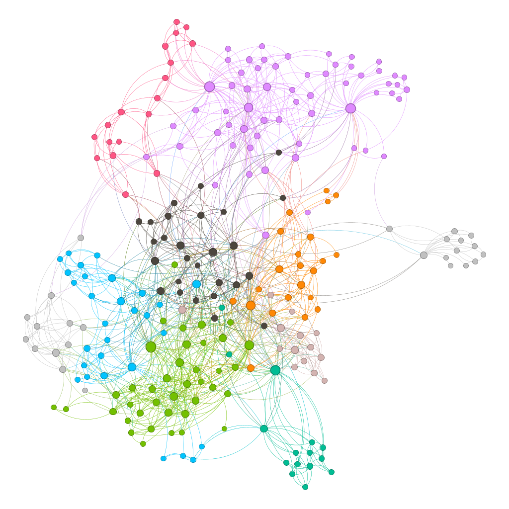

Generating network visualizations from user documentation

Documentation scraper and network visualization tool developed for Playday
in Python. The application combines a webscraper scraper and a GEXF network
generator to optimize Playday's user-facing documentation. The scraper uses
requests and BeautifulSoup with a breadth-first search to crawl all valid
links. The harvested data is processed into pandas DataFrames and converted
into .gexf files via NetworkX, enabling visualization in Gephi. Clustering
algorithms in Gephi assign colors to nodes, effectively isolating navigation
clusters and revealing user traversal paths through the documentation. This
approach provides clear, actionable insights for improving content structure
and discoverability.
Github repo ➚
| Date 2023/04/29
QoL fast file transfer HTTP server


A barebones script built using python with Flask and qrencode to turn your
computer into a local file drop. It spins up a web server, generates a QR
code, and lets anyone on your network upload files straight to your machine.
Just a quick and dirty way to share files. Thrown together for casual use at
my living collective, where it comes in handy for file backups and party
events.
Github gist ➚
| Date 2025/06/23
School task list generator

A HTML/CSS/JS Github Pages app to create kitchen duty week lists, built for
Højskolen Mors where I went E24. It evenly spreads assignments across the
week and tries not to stick the same person on the same day again and again.
The clean, print-friendly layout makes it easy to download and slap onto the
fridge or bulletin board. You can find it
here. It is
designed to keep things running smoothly, save countless hours and a lot of
grumbling for the interns who come after us.
Github repo ➚ |
Date 2025/01/14
Master's Thesis: Drones for security and surveillance

I wrote my thesis at Aalborg University in Human-Computer Interaction,
supervised by Timothy Robert Merritt. Our project was part of HERD, which
looks at how drones and drone swarms can improve areas like agriculture,
public safety, and search and rescue. In the first semester, we worked with
Robotto, an AI and drone company, and Amagerværket, a biofuel power plant.
Together, we ran co-design sessions to figure out the best ways to show
biofuel data to users and explore how drones could help manage critical
infrastructure. Later, we focused on how drones can improve the security and
safety of critical infrastructure, especially as threats become more
advanced and traditional monitoring isn't enough. We researched what
operations staff need from drone systems and how interfaces should be
designed to support them. The project resulted in practical design
suggestions that can help both designers and researchers build better
drone-based security solutions.
Github repo ➚
| Date 2024/06/14